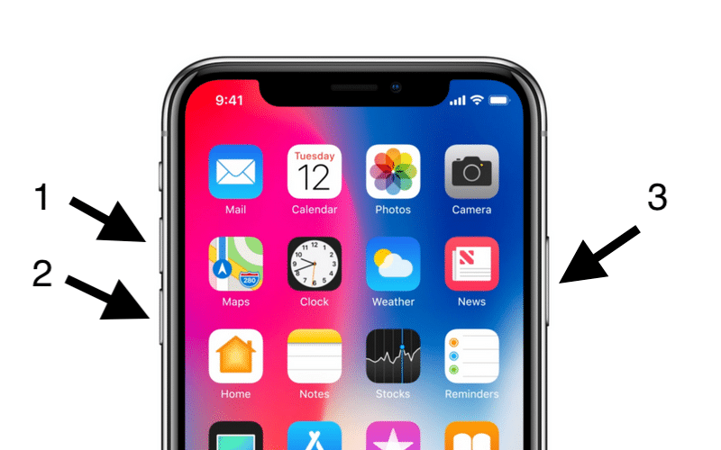
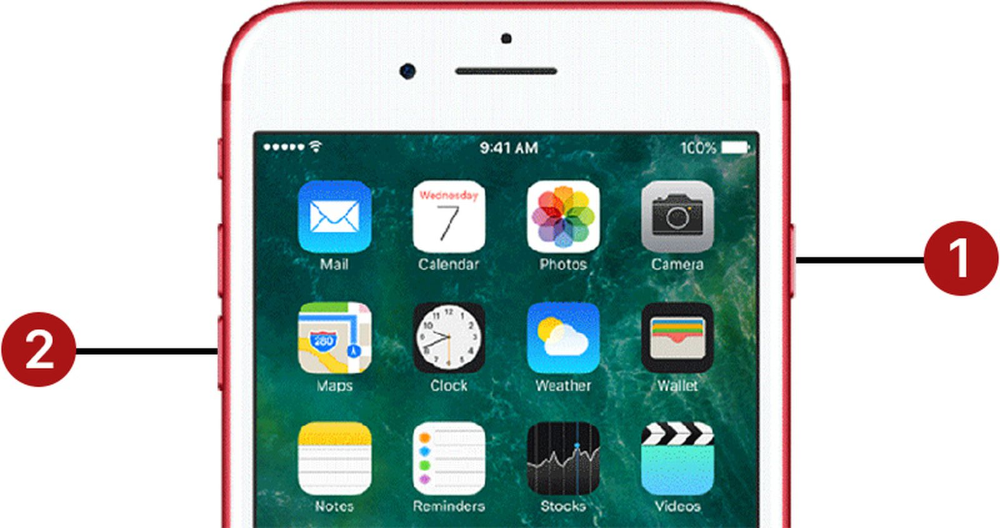
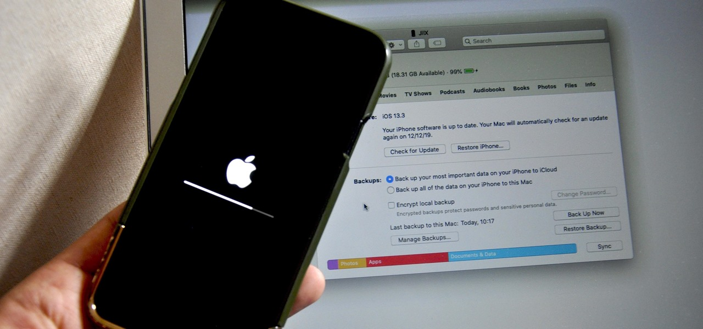
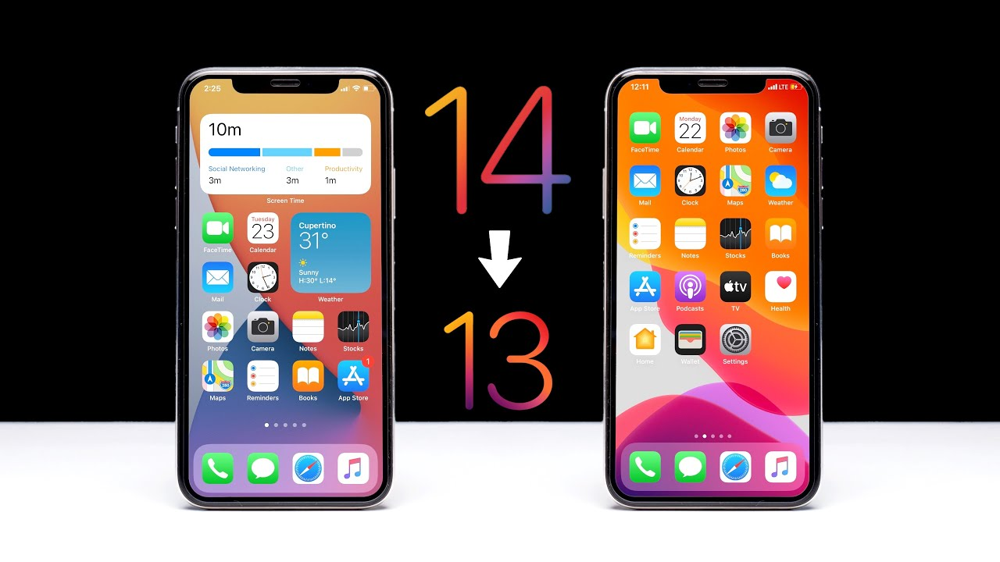

A few weeks ago, Apple released iOS 14 Developer Beta 1 and recently iOS 14 Developer Beta 2. Here different problems arose for different devices and this was also different for each other. But this is a normal thing to expect from an early release beta software. However, applications have started to crash within this iOS 14 since yesterday or today. Another special thing is that this happens with iOS 13.5.1 and iOS 13.6 Beta. Also, it is special that most of these apps work through an online server.
In any case, this can be caused by the Apple Server, especially since Apple is about to release iOS 13.6 GM and release the iOS 14 Public Beta Program, usually server issues may come. You can check whether this is an Apple Server Issue through the link below and if there is a green dot here, it means that there is no Apple Server Issue.
https://www.apple.com/support/systemstatus/
Otherwise, if your apps crash, let's talk about some solutions from simple to complex.
Quit & ReOpen Applications
I don't need to explain this. Apps with issues can be closed and reopened
Delete & Reinstall or Update
When some iOS versions are released, those apps rarely have to be updated to the new version. If this happens, it is advisable to update the application to the latest version. Otherwise, you can delete and reinstall applications.
Also, if you are a developer who has not given updates for years, it is difficult to say that this will be fixed. But you can notify these issues to the developers through email. Or you can report an error
Also, according to a bug reported on July 7, 2020, it has been found that popular iOS applications like Spotify and Tiktok are causing the Facebook application to crash. Although this is a rare occurrence, you can also delete the Facebook application and restart or hard reboot the device to see if other applications crash.
Hard Reboot Your Device
You can hard reboot the device, not turning it off and on for this
In iPhone 8 and later devices

Click the Volume Up Button and Quick Release, Click the Volume Down Button, Quick Release, Press and Hold the Side Button, and the screen should be black.
iPhone 7 and 7 Plus

Press and hold the Volume Down Button and the Side Button until the screen turns black.
If sent iPhone 6s / 6s Plus and older
The Side Button and Home Button should be pressed and held until the screen turns black.
Restore Device
This is a very good solution. We can restore the device through itunes. It would be better if you use it once a year. Also, before restoring, don't forget to backup all your files in itunes.
● Download the IPSW file according to your device & software version
● Apple ID and Password that you are using on iPhone/iPad.
● Turn off Find My iPhone/iPad Activation – Settings app > Profile name > iCloud > Find My > Turn off Toggle and Enter Verification Apple ID password.
● Now Mac Have Enough Free space to backup your iPhone/iPad
● Connect your iPhone to Mac using Cable.
● Launch Finder on Mac running macOS Catalina. [Apple Removed iTunes]
● Your iPhone/iPad will show in Finder Sidebar.
● Click on Device's name to get the summary page.
● Under the Backup section, click on the Backup Now button to start backup before restoring.
● Once Backup is complete, Use Options + Restore iPhone/iPad button [Mac] and Shift + Restore iPhone/iPad Button [Windows].
● Browser ipsw file that downloaded at first.
● Click on open to start the restore process.
● it will take time depends on Data saved on iPhone/iPad

Downgrade from iOS 14 to iOS 13
If you have this problem in iOS 14, the best thing to do is to downgrade to the latest iOS 13 version, and this is very similar to restoring, so here you should especially think about data backup, because a backup made in iOS 14 may not be restored in iOS 13. If possible, backup the data in another way.

So I think that all these methods will be able to resolve this App crash issue. In any case, it is up to Apple to resolve all this before a long time passesApple Application Developers work.